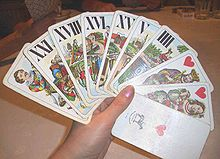

What is Tarot?
Tarot (/ˈtæroʊ/, first known as trionfi and later as tarocchi or tarocks) is a pack of playing cards, used from at least the mid-15th century in various parts of Europe to play card games such as Tarocchini. From their Italian roots, tarot-playing cards spread to most of Europe, evolving into a family of games that includes German Grosstarok and modern games such as French Tarot and Austrian Königrufen. In the late 18th century French occultists made elaborate, but unsubstantiated, claims about their history and meaning, leading to the emergence of custom decks for use in divination via tarot card reading and cartomancy. Thus, there are two distinct types of tarot packs in circulation: those used for card games and those used for divination. However, some older patterns, such as the Tarot de Marseille, originally intended for playing card games, are also used for cartomancy.
Suits
Like the common playing cards, tarot has four suits that vary by region: French suits are used in western, central and eastern Europe, and Latin suits in southern Europe.
Cards
Each suit has 14 cards: ten pip cards numbering from one (or Ace) to ten; and four face cards: King, Queen, Knight, and Jack/Knave/Page. In addition, and unlike standard packs, the tarot also has a separate 21-card trump suit and a single card known as the Fool. Depending on the game, the Fool may act as the top trump or may be played to avoid following suit. These tarot cards are still used throughout much of Europe to play conventional card games
Distribution
The use of tarot playing cards was at one time widespread across the whole of Europe except the British Isles and the Iberian Peninsula.[citation needed] Having fallen into decline by the 20th century, they later experienced a renaissance in some countries and regions. For example, French Tarot was largely confined to Provence in the 18th century, but took off in the 1950s to such an extent that, in 1973, the French Tarot Association (Fédération Française de Tarot) was formed and French Tarot itself is now the second most popular card game in France. Tarock games like Königrufen have experienced significant growth in Austria where international tournaments are held with other nations, especially those from eastern Europe that still play such games, including Hungary, Romania, Slovakia and Slovenia. Denmark appears to be the only Scandinavian country that still plays tarot games, Danish Tarok being a derivative of historical German Grosstarock. The game of Cego has grown in popularity again in the south German region of Baden. Italy continues to play regionally popular games with their distinctive Tarot packs. These include: Ottocento in Bologna and Sicilian Tarocchi in parts of Sicily. Meanwhile Troccas and Troggu are still played locally in parts of Switzerland.
History
Tarot cards, then known as tarocchi, first appeared in Ferrara and Milan in northern Italy, with the Fool and 21 trumps (then called trionfi) being added to the standard Italian pack of four suits: batons, coins, cups and swords. Scholarship has established that the early European cards were probably based on the Egyptian Mamluk deck invented in or before the 14th century, which followed the introduction of paper from Asia into Western Europe. By the late 1300s, Europeans were producing their own cards, the earliest patterns being based on the Mamluk deck but with variations to the suit symbols and court cards. The first records of playing cards in Europe date to 1367 in Bern and they appear to have spread very rapidly across the whole of Europe, as may be seen from the records, mainly of card games being banned. Little is known about the appearance and number of these cards, the only significant information being provided by a text by John of Rheinfelden in 1377 from Freiburg im Breisgau, who, in addition to other versions, describes the basic pack as containing the still- current 4 suits of 13 cards, the courts usually being the King, Ober and Unter ("marshals"), although Dames and Queens were already known by then. An early pattern of playing cards used the suits of batons or clubs, coins, swords, and cups. These suits are still used in traditional Italian, Spanish and Portuguese playing card decks, and are also used in modern (occult) tarot divination cards that first appeared in the late 18th century.A lost tarot-like pack was commissioned by Duke Filippo Maria Visconti and described by Martiano da Tortona, probably between 1418 and 1425 since the painter he mentions, Michelino da Besozzo, returned to Milan in 1418, while Martiano himself died in 1425. He described a 60-card deck with 16 cards having images of the Roman gods and suits depicting four kinds of birds. The 16 cards were regarded as "trumps" since, in 1449, Jacopo Antonio Marcello recalled that the now deceased duke had invented a novum quoddam et exquisitum triumphorum genus, or "a new and exquisite kind of triumphs." Other early decks that also showcased classical motifs include the Sola-Busca and Boiardo-Viti decks of the 1490s.
Early Tarot
The first documented tarot decks were recorded between 1440 and 1450 in Milan, Ferrara, Florence and Bologna, when additional trump cards with allegorical illustrations were added to the common four-suit pack. These new decks were called carte da trionfi, triumph cards, and the additional cards known simply as trionfi, which became "trumps" in English. The earliest documentation of trionfi is found in a written statement in the court records of Florence, in 1440, regarding the transfer of two decks to Sigismondo Pandolfo Malatesta. The oldest surviving tarot cards are the 15 or so decks of the Visconti-Sforza Tarot painted in the mid-15th century for the rulers of the Duchy of Milan. In 15th century Italy, the set of cards that was included in tarot packs, including trumps, seems to have been consistent, even if naming and ordering varied. There are two main exceptions: Some late 15th century decks like the Sola Busca tarot and the Boiardo deck had four suits, a fool, and 21 trumps, but none of the trumps match tarot ones. They seem to have been made on the model of tarot decks, but were voluntary departures from an established standard. The Visconti di Mondrone pack, one of the Visconti-Sforza decks, originally had a Dame and a Maid in each suit, in addition to the standard King, Queen, Knight, and Jack. Additionally, the pack includes three trump cards which represent the theological virtues of Faith, Hope, and Charity, and are not present in any other tarot deck of that era. Although a Dominican preacher inveighed against the evil inherent in playing cards, chiefly because of their use in gambling, in a sermon in the 15th century, no routine condemnations of tarot were found during its early history.
Propagation
Because the earliest tarot cards were hand-painted, the number of the decks produced is thought to have been small. It was only after the invention of the printing press that mass production of cards became possible. The expansion of tarot outside of Italy, first to France and Switzerland, occurred during the Italian Wars. The most prominent tarot deck version used in these two countries was the Tarot of Marseilles, of Milanese origin. While the set of trumps was generally consistent, their order varied by region, perhaps as early as the 1440s. Michael Dummett placed them into three categories. In Bologna and Florence, the highest trump is the Angel, followed by the World. This group spread mainly southward through the Papal States, the Kingdom of Naples, and finally down to the Kingdom of Sicily but was also known in the Savoyard states. In Ferrara, the World was the highest, followed by Justice and the Angel. This group spread mainly to the northeast to Venice and Trento where it was only a passing fad. By the end of the 16th century, this order became extinct. In Milan, the World was highest, followed by the Angel; this ordering is used in the Tarot of Marseilles. Dummett also wrote about a possible fourth lineage that may have existed along the Franco-Italian border. It spread north through France until its last descendant, the Belgian Tarot, went extinct around 1800. In Florence, an expanded deck called Minchiate was later used. This deck of 97 cards includes astrological symbols and the four elements, as well as traditional tarot motifs. The earliest known mention of this game, under the name of germini, dates to 1506.
Etymology
The word "tarot" and German Tarock derive from the Italian Tarocchi, the origin of which is uncertain, although taroch was used as a synonym for foolishness in the late 15th and early 16th centuries. The decks were known exclusively as Trionfi during the fifteenth century. The new name first appeared in Brescia around 1502 as Tarocho. During the 16th century, a new game played with a standard deck but sharing a very similar name (Trionfa) was quickly becoming popular. This coincided with the older game being renamed tarocchi. In modern Italian, the singular term is Tarocco, which, as a noun, is a cultivar of blood orange. The attribute Tarocco and the verb Taroccare are used regionally to indicate that something is fake or forged. This meaning is directly derived from the tarocchi game as played in Italy, in which tarocco indicates a card that can be played in place of another card.